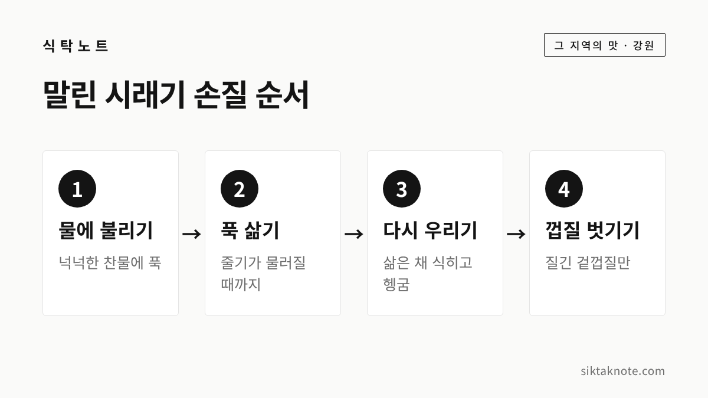

양구 시래기 이야기 — 펀치볼 바람이 두 달 말린 무청

3줄 요약
- 양구 시래기는 해안면 펀치볼 분지에서 시래기용 무를 길러, 기계 대신 찬바람에 오래 말려 만듭니다.
- 말린 시래기는 물에 불리고, 푹 삶고, 다시 우리는 세 단계를 거쳐야 부드러워져요.
- 2026 청춘양구 펀치볼 사과·시래기축제는 11월 6일부터 8일까지 해안면에서 열린다고 보도됐습니다.
행사 정보
- 행사명
- 2026 청춘양구 펀치볼 사과·시래기축제
- 기간
- 2026년 11월 6일(금) ~ 8일(일), 3일간 (양구문화재단 입점부스 모집 공고를 전한 언론 보도)
- 장소
- 양구군 해안면 펀치볼힐링하우스 앞 성황지
- 주최
- 양구문화재단
- 주제
- 펀치볼에 빠지다, 펀치볼 Fall in Love (언론 보도)
- 프로그램·시간
- 올해 세부 프로그램과 시간표는 아직 확인하지 못했어요
- 문의
- 033-482-9172 (양구문화재단, 지난해 축제 안내 기준)
2026.10.06 확인 기준. 날짜와 장소는 입점부스 모집 공고를 전한 기사로 확인했어요. 프로그램과 교통 안내는 양구문화재단 공지를 확인하세요.
화채 그릇을 닮은 마을, 펀치볼
양구 북쪽 끝 해안면에는 산이 빙 둘러싼 넓은 분지가 있는데요. 정식 이름은 해안분지이고, 흔히 펀치볼이라고 부릅니다. 한국전쟁 때 외국 종군기자들이 가칠봉에서 내려다본 모습이 화채 그릇(펀치볼)을 닮았다고 해서 붙은 이름이라고 알려져 있어요. 언론 보도에 따르면 해발 1,100m가 넘는 봉우리들이 남북 11.95km, 동서 6.6km 크기의 분지를 감싸고 있다고 합니다.
전쟁의 상처가 깊게 남은 최전방 마을이지만, 지금은 시래기와 사과, 곰취로 이름이 났습니다. 이 글에서는 그중 시래기 이야기를 해 보려고 해요.
시래기와 우거지는 다른 거예요
시래기는 무청이나 배춧잎을 말린 것을 말합니다. 우거지는 푸성귀를 다듬을 때 골라 놓은 겉대를 가리키고요. 그래서 흔히 "시래기는 무에서, 우거지는 배추에서"라고 구분하기도 하는데요. 양구 시래기는 무청을 말린 시래기입니다.
예전에는 김장하고 남은 무청을 새끼에 엮어 처마 밑에 걸어 두던 게 시래기였죠. 펀치볼에서는 아예 시래기를 얻으려고 무를 기릅니다. 지리적표시 기준에도 시래기용 무 품종을 쓴다고 소개돼 있어요.

펀치볼 시래기가 이름난 까닭
언론 보도에 따르면 펀치볼은 우리나라에서 보기 드문 고지대 분지라 낮과 밤의 기온 차이가 크다고 합니다. 분지 안을 도는 바람이 시래기를 말리기에 좋아서, 다른 지역 시래기보다 맛과 향, 식감이 낫다는 평을 듣는다고 하고요. 해발 600m 안팎의 땅에서 길러 추운 날씨에 두 달가량 자연 건조한다는 보도도 있습니다.
말리는 방식에도 고집이 있는데요. 맛과 품질을 위해 기계 건조 대신 자연 건조를 택하고 있다고 합니다. 8월 중순쯤 씨를 뿌리고, 60일가량 길러 거둔 뒤 말리는 데만 다시 40일 넘게 걸린다는 보도가 있어요. 햇시래기가 언제 나오느냐는 그해 11월 날씨에 달려 있다고 하니, 하늘이 함께 만드는 셈이죠.
이런 이야기가 쌓여 '양구시래기'는 시래기 품목으로는 처음으로 지리적표시 등록(제109호)을 받았다고 보도됐습니다. 양구군에서 시래기용 무로 재배하고, 최소 60일 이상 건조하는 것이 기준으로 소개됐어요. 숫자는 대부분 언론 보도로 확인한 것이라, 해마다 조금씩 달라질 수 있다는 점은 감안해 주세요.
말린 시래기, 이렇게 손질합니다
바싹 마른 시래기는 바로 끓이면 질기고 뻣뻣한데요. 불리고, 삶고, 다시 우리는 세 단계를 거쳐야 부드러워집니다.
- 불리기: 넉넉한 물에 담가 충분히 불려요. 줄기까지 말랑해질 때까지 두는 게 좋습니다.
- 삶기: 불린 물을 버리고 새 물에 넣어 줄기가 손톱으로 눌릴 만큼 물러질 때까지 삶습니다.
- 우리기: 불을 끄고 삶은 물째 그대로 식혀 두면 속까지 부드러워져요. 그다음 찬물에 몇 번 헹궈 남은 냄새를 뺍니다.
- 껍질 벗기기: 굵은 줄기에 질긴 겉껍질이 남아 있으면 벗겨 주세요. 식감이 훨씬 좋아집니다.
불리는 시간과 삶는 시간은 시래기 굵기와 마른 정도에 따라 꽤 달라지는데요. 정해진 숫자보다 줄기를 직접 만져 보고 판단하시는 게 가장 정확합니다. 나물 삶고 우리는 원리는 나물 쓴맛·아린맛 빼는 법에도 정리해 두었어요.
삶은 시래기는 나눠서 얼려 두세요
한 번 삶을 때 넉넉히 삶아 두면 편합니다. 물기를 가볍게 짜서 한 번 먹을 만큼씩 나눠 냉동해 두면, 국이나 조림 할 때 바로 꺼내 쓸 수 있거든요.
시래기로 차리는 한 상
시래기는 구수한 맛이 강해서 된장, 들깨, 들기름과 특히 잘 어울립니다.
| 요리 | 이렇게 해요 |
|---|---|
| 시래기 된장국 | 삶은 시래기를 송송 썰어 된장에 조물조물 무친 뒤 멸치 육수에 끓여요 |
| 시래기 들깨볶음 | 들기름에 볶다가 들깻가루와 물을 조금 넣어 자작하게 익혀요 |
| 시래기밥 | 쌀 위에 양념한 시래기를 얹어 밥을 짓고, 양념장에 비벼 먹어요 |
| 시래기 고등어조림 | 냄비 바닥에 시래기를 깔고 생선을 올려 졸여요 |
미리 된장이나 국간장, 들기름으로 밑간해서 무쳐 두었다가 요리하면 맛이 속까지 배어듭니다. 고기나 생선과 함께 졸이면 기름진 맛을 시래기가 잡아 줘서 잘 어울려요.
11월, 펀치볼 사과·시래기축제
양구에서는 해마다 늦가을에 펀치볼에서 사과와 시래기를 함께 알리는 축제를 엽니다. 올해 '2026 청춘양구 펀치볼 사과·시래기축제'는 11월 6일부터 8일까지 해안면 펀치볼힐링하우스 앞 성황지에서 열린다고 보도됐어요. 양구문화재단이 입점부스 모집을 알리면서 함께 밝힌 일정입니다.
지난해 축제에서는 시래기·사과 푸드 체험, 시래기 떡메치기, 시래기와 사과 판매 같은 프로그램이 있었다고 안내됐는데요. 올해 프로그램과 시간표는 아직 확인하지 못했습니다. 가시기 전에 양구문화재단 공지를 꼭 한 번 확인해 보시는 게 좋겠습니다.
버리던 잎에서 마을의 자랑으로
무청은 예전엔 김장하고 남는 부산물이었는데요. 펀치볼에서는 그 무청이 마을을 먹여 살리는 작물이 되었습니다. 2019년 보도에 따르면 시래기 농가가 260곳이 넘었다고 하니, 산골 마을의 겨울 풍경을 바꿔 놓은 셈이죠.
집에서 무를 사면 잎을 그냥 버리지 말고 말려 보셔도 좋겠습니다. 무와 무청을 오래 두는 방법은 무 오래 보관하는 법에 정리해 두었어요. 찬바람 부는 날, 구수한 시래기 된장국 한 그릇 끓여 보시면 좋겠습니다.